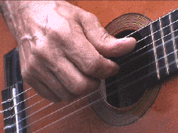
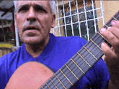
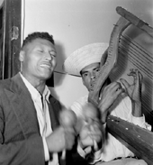

Fotos en Color: E. Mendoza, 2001
Fotos en B y N: Sarita Mendoza, 1956

1
Igualmente, no deberíamos fijar nuestra identidad musical en el Joropo Llanero, como nos hemos acostumbrado, ya que este baile es mitad colombiano y además dejaríamos afuera otras músicas o géneros de nuestra región de similar importancia que tienen poco en común con el arpa, maracas y el cuatro. A nivel comercial, la salsa en manos de Oscar D’León es sin duda el sonido “venezolano” con mayor despliegue mundial, a pesar de que este derivado del son cubano con aliño del Bronx nada tiene que ver con un desarrollo Made in Venezuela.
Curiosamente, nuestro país es reconocido y admirado musicalmente en el ámbito internacional no a través de sus tradiciones populares sino por un instrumento que mantiene un perfil muy bajo dentro del folklore venezolano: la guitarra española. Podríamos añadir a manera de tímida aclaratoria, para no destapar la olla, que en política cultural se maneja ahora más la representación de la actividad musical venezolana en manos de las orquestas sinfónicas juveniles que por cualquier otro género musical, aún cuando estas orquestas interpreten a muy pocos compositores venezolanos en su repertorio habitual. En este caso, el instrumento típico venezolano, si se tuviera que escoger uno sólo, ¡sería el violín!
La guitarra es tocada en el globo entero y, en donde se estudie con profundidad, tarde o temprano sonará de sus cuerdas un vals de Antonio Lauro, Hecho en Venezuela. La dialéctica entre la asimilación internacional de un producto regional oscila entre su capacidad de difusión a través de un instrumento globalizado y la originalidad del producto que permita identificarlo con su procedencia regional, indiferente a la materia de la que esté hecho. El cuatro, más venezolano que la guitarra española, presenta dificultades para internacionalizarse por su técnica particular de la mano derecha que no es conocida fuera de las fronteras venezolano-colombo-trinitarias. Ayuda, por supuesto, la difusión a través de un gran artista virtuoso que haga un impacto lo suficientemente atractivo para enganchar la atención mundial. Así ocurrió en el momento preciso con Alirio Díaz a favor de la música de Lauro que sólo él manejaba como gran joya secreta de los encores en sus incontables conciertos por todo el mundo. Él mismo se encargó de llevar las partituras de Lauro a editoriales extranjeras para auspiciar su efecto multiplicador. Si no fuera por Alirio, Lauro no hubiera tenido la importancia que mantiene hoy en día como repertorio de facto de los guitarristas en todo el mundo.
Sorprende que el género por el cual se conoce más a la guitarra venezolana de Lauro es el vals venezolano, entre ellos “Natalia” y no tanto por sus piezas más vernáculas como el “Seis por Derecho,” el “Merengue” o el “Pasaje Aragüeño.” La producción de Lauro es mayormente en el género de vals, ritmo casi con la exclusividad de la producción venezolana de piano de salón del siglo XIX y con él logró piezas bellas y de alta exigencia técnica guitarrística. El Pasaje Aragüeño fue publicado sólo hace un año (Caroní Music C.A., Caracas), ya que Lauro nunca la escribió en papel y su alumno Luis Zea la transcribió de una grabación en cassette de una ejecución casual del maestro.
El pasaje aragüeño junto al golpe tuyero constituye un género del joropo venezolano conocido como el joropo central de la región de los estados Aragua y Miranda. Este se desenvuelve principalmente a través de la ejecución del arpa central de cuerdas de nylon y metal junto al cantante que simultaneamente canta y toca las maracas - sin el cuatro - a diferencia del joropo llanero. Existe joropo central tocado además en el cuatro, o en la armónica, acordeón, bandola o guitarra. Es una tradición viva y activa, sin apego al calendario religioso, con la cual las personas bailan los fines de semana, días de fiesta, en reuniones familiares o en locales comerciales. Se escucha en la radio y los músicos pueden vivir profesionalmente de su arte.
A pesar de ser uno de los géneros del folklore venezolano de más belleza y elaboración, en mi opinión, poco se conoce fuera de los cultores en su región y de él poco se ha escrito. Persiste como un submundo entre otros niveles más preponderantes y simultáneos, incluso dentro de la gran urbe de Caracas. Del joropo central en la guitarra, aún menos se sabe y lamentablemente está en proceso de extinción. La única literatura musical para la guitarra referente a esta tradición es el arriba mencionado “Pasaje Aragüeño” de Lauro, con la suerte de que sobrevivió la desaparición de su autor en un cassette fortuito.
Si buscáramos una guitarra muy venezolana, ésta sería la guitarra tuyera o central.

21
Pedrito Díaz nació el 19 de mayo de 1941,
en San Antonio de los Altos, estado Miranda. A los once años, en
1952 ganó el Primer Premio en un concurso musical organizado por
varios intelectuales recién mudados a este pueblito
idílico
en los Altos Mirandinos, quienes qui-sieron aportar a las celebraciones
de las fiestas patronales en su gratitud por encontrar la paz dentro
del
tumulto del régimen del dictador Pérez Jiménez.
Cantando
y tocando el cuatro Pedrito se ganó trescientos bolívares
con un instrumento regalado por su papá, ejecutando su propio
arreglo
de una pieza llamada “La Chamiza.”

Su padre Andrés Díaz tocaba el cuatro,
la guitarra, mandolina, la bandola y el violín, e inició
a Pedrito con unos acordes en el cuatro en medio de reuniones
familiares
de tíos en las cuales la música y el baile era la
principal
actividad. Pedrito aprendió por su cuenta a dominar el cuatro,
la
guitarra y más tarde el tres cubano, y a los ocho años ya
los ejecutaba con ágil versatilidad.
Antes de su cumplimiento con el ejército, por los años sesenta, empezó a tocar en casas de familia, en plazas y bailes, y formó parte de un grupo de “música rítmica” con el nombre de “Platinado.” Lo formaban la trompeta, saxofón, steel pan, tres y batería, y amenizaban fiestas tocando de todo. Por los mismos años, con Vidal González, músico clave del pueblo de San Antonio, formó el grupo “Piaroa” en el cual Pedrito tocaba el bajo o el cuatro junto al arpa y a las maracas, colaborando especialmente en las fiestas patronales y en los aguinaldos de diciembre. En 1971 funda de nuevo el segundo grupo “Piaroa” con Vidal González ahora en el violín, el “Gordo” Miguel Espósito en el bajo, Cesar Monroy en la percusión y Pedrito en la guitarra. Grabaron un disco de 45 rpm junto al isleño Geraldo Ramayo cantando dos piezas de Pedrito, “Morena” (balada) y “Yo Quiero” (bolero), con la casa Discomoda.
Toca boleros, música romántica y en especial joropo tuyero. Su guitarra utiliza sólo cuerdas de nylon a pesar de la costumbre del joropo central de incluir algunas cuerdas metálicas. Toca las seis cuerdas de la guitarra con los cuatro dedos de la mano derecha y no utliza el capo, artefacto muy usual en los guitarristas tuyeros para acomodarse al tono del cantante. No conoce ni toca con otros guitarristas fuera de la zona, pero dentro de San Antonio se relaciona y hace música con Vidal González, Guillermo Ascanio y el taxista Reinaldo González, tío de Vidal.
Trabajó catorce años en la
Orfebrería
Magdalozo en San Antonio y a partir de los años setenta se
inicia
como plomero de la zona a tiempo completo. Actualmente sólo toca
en reuniones familiares y desde hace mucho tiempo no toca más en
público, según él, “por falta de ánimo.”
Dio
clases a algunos muchachos de la vecindad que ya están tan
viejos
como él, pero no continuaron con el instrumento. Igualmente sus
hijos no se animan a tocar. Pedrito el Plomero es una persona muy
querida
por el pueblo de San Antonio y es el último guitarrista tuyero
que
queda en la zona.
32
San Antonio, por su cercanía a la capital
(±14
Km), ha servido como ciudad dormitorio de las personas que trabajan en
Caracas a partir de la construcción de la carretera Panamericana
que las une. Este pueblito de agricultores sufrió una desmedida
y bizarra explosión habitacional hace treinta años como
coletazo
de la bonanza petrolera de aquel entonces, la corrupción
incipiente
y por la ausencia completa de planificación urbana. Más
recientemente,
se añadió a este desastre un abrupto crecimiento de
instalaciones
comerciales. Constituido en su cuerpo nuevo por una clase media de
formación
cultural urbana, es decir de alto contenido cultural extranjero y
mezclado,
el antiguo pueblo canario carece actualmente de cualquier rastro
identificador cultural que no sea foráneo.

Las culturas musicales son sinceras, son lo que son y no lo que debieran ser. Cambian continuamente y se encuentran en un estado dinámico de adaptación permanente a factores externos o a creadores internos. Si bien existe una tendencia natural hacia la estabilización (tradición) y regularización en el tiempo (calendario), las músicas se encuentran en una interacción entre los polos “permanencia-cambio” y en una dinámica entre “unicidad y generalidad.” Muchos factores cohiben, estabilizan o incrementan la transformación cultural de un ente musical en su sociedad y en el tiempo, como por ejemplo la ausencia de interferencia externa, aislamiento comunicacional y geográfico, presencia de culto ligado a la manifestación, presencia de cambios regulares climáticos, estabilidad económica (sea poca o mucha), fuerte autoestima social y cultural, efectivo traspaso de conocimientos entre generaciones.
En tal sentido, cuando nos enfrentamos a una manifestación musical que está a punto de extinción, como la guitarra tuyera de Pedrito en San Antonio, resulta ingenuo pensar en el rescate de nuestros valores a través de una proyección de segunda mano con un grupo consolidado como una empresa para conciertos, producción de CD’s y giras al exterior; o a través de un congelamiento en un instituto en forma de grabaciones o transcripciones; o publicaciones por académicos en escalafón o postgrados; o exquisitos libros de mesa para las visitas. Se trata de un ser vivo que respira de su entorno. No es la música la que se debe rescatar o salvar, el enfoque se debe centrar en el ser vivo que la hace y la siente. Si su contexto cultural y social niega su sobrevivencia, no hay nada que hacer sino aceptar la verdad de su extinción.
Por otro lado, propongo como alternativa de pensamiento y solución a este problema, dar prioridad al estudio y detección de los factores y agentes que se puedan alterar en la comunidad para permitir el libre re-crecimiento del cultor, sin ser tocado directamente, tal como una matica media seca. Establecer con conocimiento de análisis si su sociedad realmente quiere o no a la manifestación que ella misma está dejando perder, si le hace falta. Determinar el grado de cambio, si se incrementa peligrosamente, qué lo afecta y qué podría moderar la transformación violenta del ente cultural. Sólo así podremos hablar de rescate, en el sentido integral de su existencia cultural.
Quizás aún esta guitarra no ha muerto
del
todo.
1 Según entrevistas realizadas y grabadas en video por el autor a Pedrito Díaz en San Antonio de los Altos, entre noviembre, 2000 y julio, 2001,con la ejecución de su guitarra.
2 Emilio Mendoza, extracto de la charla “Los Medios de Comunicación y la Degradación Cultural,” impartida en la Universidad de los Andes-Táchira, San Cristóbal, dentro del ciclo de conferencias “Situación Actual de la Música Venezolana en los Medios de Comunicación,” 20-7-2001.